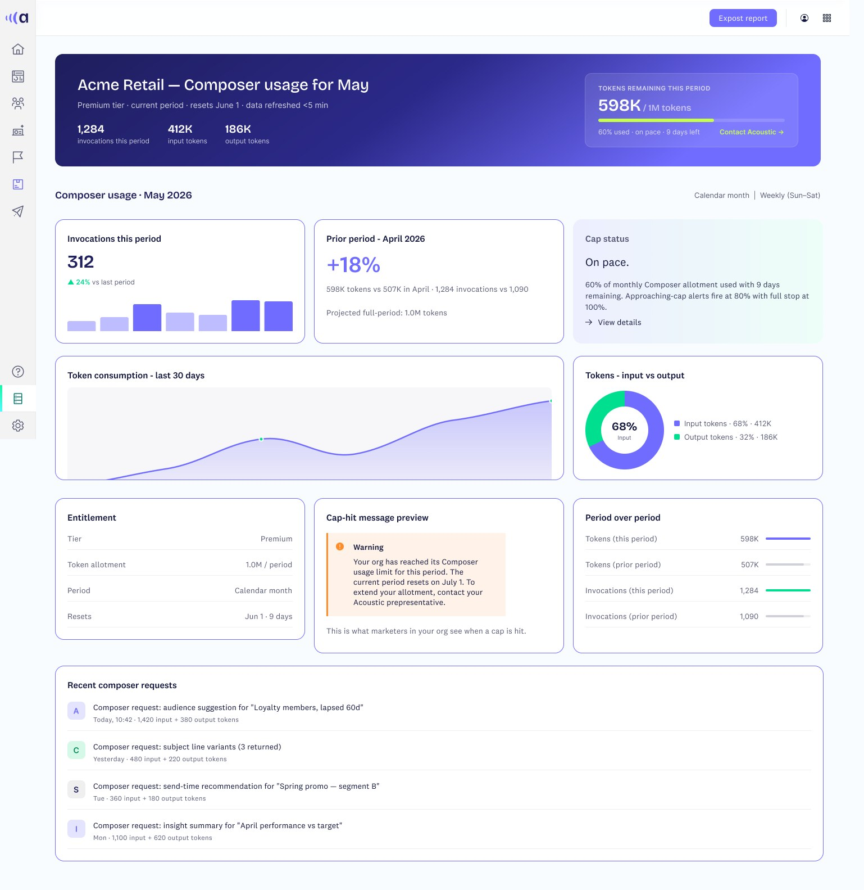
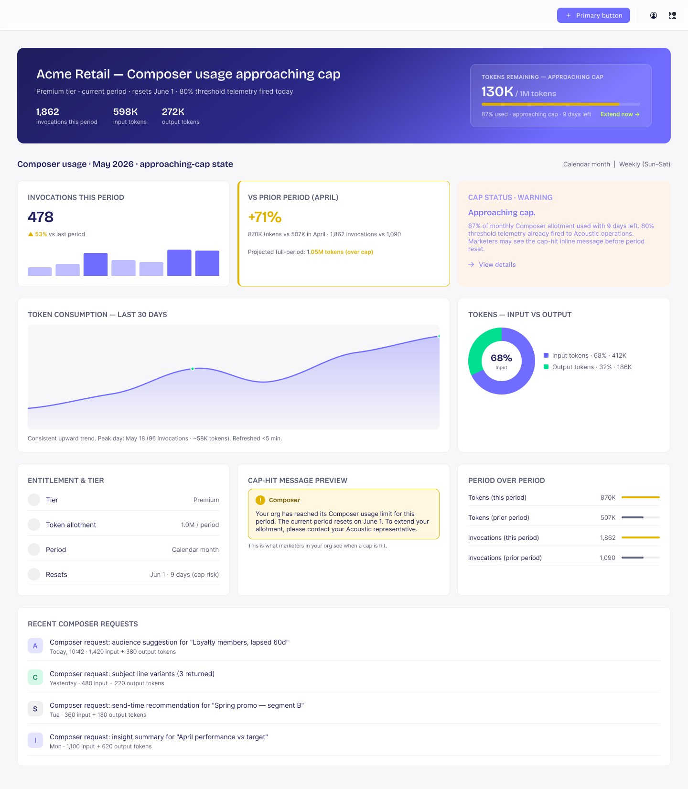
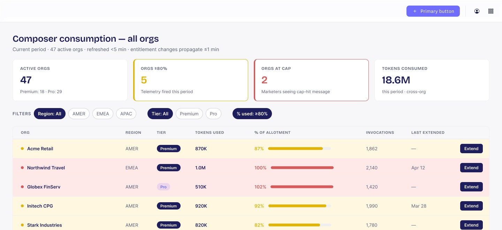

AI usage · Acoustic Composer
Built to warn early
A dashboard in three moods, plus two ways to refill before anyone hits a wall.
On pace

Approaching cap

At cap

The situation
Composer runs on a monthly token allotment, and the old screen showed one flat number. An org burning through it looked the same as one coasting, right up until Composer stopped mid-month.
The task
Let admins see trouble coming, and let admins and individual users fix it before the cap, not after a support ticket.
What I did
I designed three states tied to real usage, each with its own color, copy and next step. Warnings fire at 80%. Admins get a one-click Extend, and users get an AI assistant that walks them through asking for more.
What happened
Every warning now comes with a way out. Admins have real runway, and Acoustic's ops team can see every org close to its cap in one sorted table.
Calm on purpose
"60% used, on pace, 9 days left"
A conclusion beats a raw count. There is also a preview of exactly what a team would see at 100%, so nobody meets that message for the first time in the moment.
The 80% moment
The banner changes, and so does the button
A projected total gets flagged over cap, and the main action becomes Extend now instead of a passive link.
3
Dashboard states: on pace, approaching cap, at cap
80%
Usage that fires an early warning
2
Refill paths: one click admin action, and AI assisted request